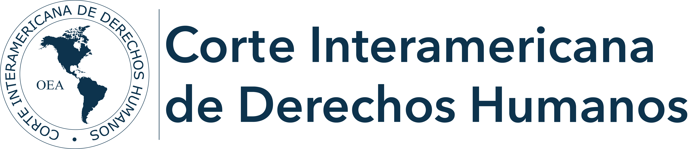
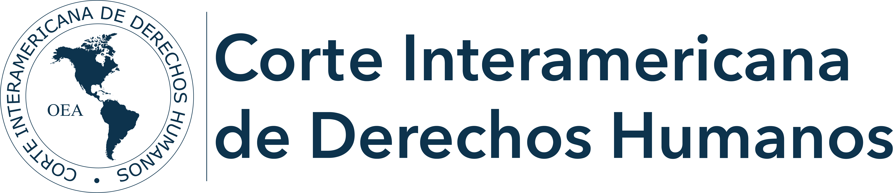

Violencia:
La violencia genera una gran cantidad de muertes a diario, entre adultos, jóvenes y niños. Además de este índice de muertes, sufren lesiones, discapacidad o problemas de salud como resultado de esta. Así mismo puede provocar depresión, ansiedad y otros trastornos de salud mental, dependiendo del tipo de violencia.
Acoso:
El acoso puede afectar a todos, está relacionado con muchas consecuencias negativas, como el impacto en la salud mental, el uso de sustancias, el suicidio, el estres post traumatico, perdida de interes en actividades comunes y paranoia.
Discriminacion:
La discriminación lamentablemente es algo muy común en el Perú, esta trae como consecuencias la reducción de su calidad de vida; el incremento de su aislamiento social y su soledad; la restricción de su capacidad de expresar su sexualidad; y el aumento del riesgo de violencia y abuso contra ellas.
 
